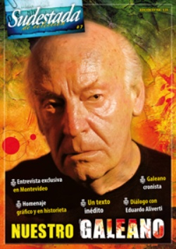

Buscar
"Todo puede nacer de nuevo"
En noviembre de 2010, Eduardo Aliverti entrevistaba al Eduardo del otro lado del charco, Galeano, para el programa que aún se emite en Radio Nacional, Decime quién sos vos. Una charla distendida que va hilvanando la vida del uruguayo: desde su época de chistes gráficos, su paso por Crisis, sus días de exilio hasta su encuentro con el Che, sus cariñosas peleas con Onetti, su técnica de escritura breve y el temor a la hoja en blanco que, todavía hoy, lo moviliza y lo hace sentir de veras vivo.
Edición Especial N° 7
Nuestro Galeano
Sudestada de Colección
Comprar edición impresaSumario
- "La memoria es una especie en vías de extinción"
- "Todo puede nacer de nuevo"
- Memorias abiertas
- Cuestión de pelotas
- "Soy un hereje de larga data"
- El abrazo de las palabras
- Nuestro Galeano
Compartir Articulo
-¿Cómo es el proceso, más que de indagación, de ejecución en tus libros?¿Primero juntás papeles con historias y después te vas a los lugares o es al revés?
-Voy recogiendo voces que después siguen sonando dentro de mí, y que se convierten en relatos... Por ejemplo, con unos pescadores aprendí esa palabra que suelo usar, que les escuché decir: "sentipensante" para definir un lenguaje que dice la verdad, o el que yo intentaría para hablar y escribir: el lenguaje que sea capaz de sentir y de pensar a la vez, que reúna la emoción y la razón, que han sido divorciados por un sistema que desvincula todo lo que toca.
Y a ese lugar fui a una charla, o a un festival de cine y después me fui, solo o con Helena, pero en general he sido muy peregrino, pateoperro...
-Y cuando te dicen esas cosas, ¿las vas anotando en el momento?
-Anoto todo lo que puedo en mini libretitas. Como ando sin saco y sin nada, entonces las llevo en los bolsillos y a veces se me caen y las pierdo. Ahí anoto algunas cosas que me parece que vale la pena retener porque el problema es que son como los médanos, que a veces se los lleva el viento.
-¿De dónde suponés que te viene, de pura técnica o de como se hablaba en tu casa, el empleo de tus frases cortas? Una colega dijo sobre tu escritura breve: "las palabras de Galeano son como cuchillos, atraviesan el hueso, es imposible permanecer indiferentes".
-Yo creo que viene, en primer lugar, de una profesión a la que he llegado porque soy un inútil total para cualquier otra cosa: no sé manejar un auto o arreglar un enchufe, entonces lo único que me sale es escribir y llevo muchos años intentando escribir de tal manera que sólo queden vivas en el papel las palabras mejores que el silencio. Eso me lo dijo una vez el viejo Onetti... debería estar escrito en grande para los que vivimos de las palabras, o los que usamos la palabra; los políticos, por ejemplo. También esta necesidad de decir mucho con poco proviene de una cierta alergia a la inflación palabraria, que es muy común en el mundo americano y en el mundo español... esa manía de palabrearlo todo. Y es también la valoración del silencio, que es quizá el lenguaje más hondo, más profundo de todos: es muy difícil competir con el silencio.
-¿Y cuál es la técnica de recorte?
-Aparece una primera versión, después llegan hasta diez o quince... me cuesta un trabajo enorme. Te voy a contar una frase que fue reveladora, que yo digo que es la mejor definición que he escuchado sobre lo que yo mismo hago. Ocurrió cuando estaba presentando Espejos -que justamente es un libro mosaico de la historia universal, con historias muy breves, muy concentradas-. Con él recorrí varios lugares de España; andaba en Galicia y al llegar a Urense -un pueblo pequeño, con mucho encanto-, hice una lectura en un local que estaba lleno. En la fila de atrás yo veía a un señor que me miraba con el ceño fruncido, sin parpadear, parecía muy enojado y con una cara muy marcada por la vida dura, al sol, la de un campesino; parecía pintado. Pero estaba enojadísimo. Al principio no me podía desprender de la mirada de ese hombre, y después de la firmadera de libros, los abrazos, los saludos, él permanecía allí quieto como una estatua. Se fueron todos y caminó hacia mí, y pensé: "es el último de mis días", y cuando llegó -sin desfruncir el entrecejo, sin pestañear-, me soltó: "Qué difícil ha de ser escribir tan sencillo". Me dio la espalda y se fue. Es lo mejor que he escuchado decir y el elogio más alto.
-Cuando eras adolescente, antes incluso de Hughes, ¿también te expresabas corto?
-Al principio no, lo he ido ganando en esta difícil tarea, que no es el resultado de ningún milagro ni es un regalo que súbitamente recibí del cielo o del infierno, sino de mucho trabajo, de ir peleando, peleando hasta sentir que vale la pena lo que digo del modo en que lo digo, aunque siempre hay una distancia que se abre entre el deseo y el mundo, entre lo que uno quiere y lo que uno puede; pero dentro de eso a veces sentís la alegría de haber estado muy cerquita.
(La nota completa en la edición especial #7 - Enero 2013)
Comentarios
Eduardo Aliverti
Articulos más vistos


LIBRERÍA SUDESTADA

Colección infantil

Distribuidora de Libros

Suscripción

Sudestada en URUGUAY

Otros articulos de esta edición
El abrazo de las palabras
El libro más entrañable de Galeano se abre de par en par. En él comienzan a desandarse esos relatos breves, ...
"La memoria es una especie en vías de extinción"
Para conversar con Eduardo Galeano hay que encontrarse en el Café Brasilero, en la ciudad vieja de Montevideo. Y ese ...
Nuestro Galeano
Memorias abiertas
En 1975 un pibe descubre las tapas de un libro en un tacho de basura. En una época en la ...
"Soy un hereje de larga data"
Referente ineludible del presente americano y cronista en tiempos de fuego y de ceniza, el escritor Eduardo Galeano relata en ...
Cuestión de pelotas
Una de sus pasiones, aquella que compartió con sus entrañables amigos, el Gordo Soriano y el Negro Fontanarrosa. El motivo ...